NEUE DATEIEN UND ORDNER ANLEGEN
Neue Datei in VS Code anlegen
Über den Befehl "touch" kann im Terminal eine neue Datei angelegt werden.
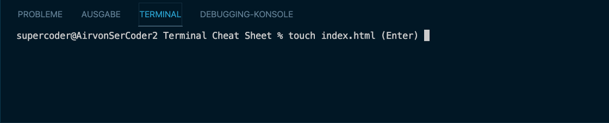Neuen Ordner in VS Code anlegen
Über den Befehl "mkdir" kann im Terminal eine neue Datei angelegt werden.
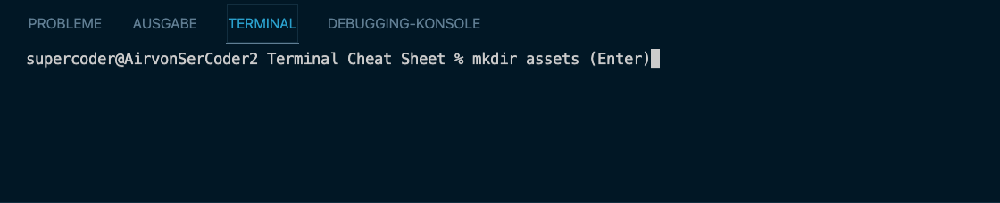Mehrere neue Ordner gleichzeitig in VS Code anlegen.
Über den Befehl "mkdir -p parentordner/kindordner/etc." kann im Terminal eine neue Datei angelegt werden.

PFAD UND NAVIGATION
Pfad in Verzeichnisse & Verzeichnisse wechseln
Über den Befehl "cd" kann im Terminal zu einem bestimmten Ordner, oder einer bestimmten Datei gelangen.
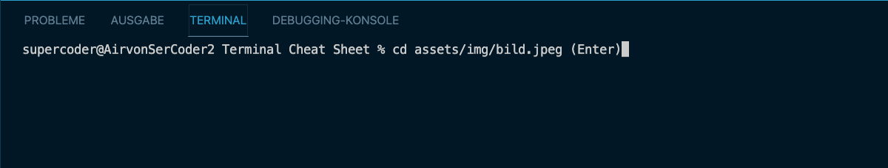Außerdem kann man mit dem Befehl "cd" wieder aus dem Ordner zurück, in übergeordnete Ordner navigieren.

INHALT ZEIGEN UND LESEN
Inhalte von Ordner anzeigen
Über den Befehl "ls" kann im Terminal lesen welche Dateien oder Ordner sich in einem übergeordneten Ordner befinden.
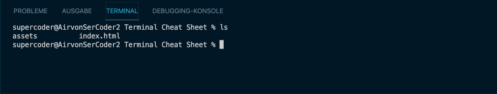Über den Befehl "ls -a" kann man sich außerdem versteckte Dateien und Ordner anzeigen lassen.
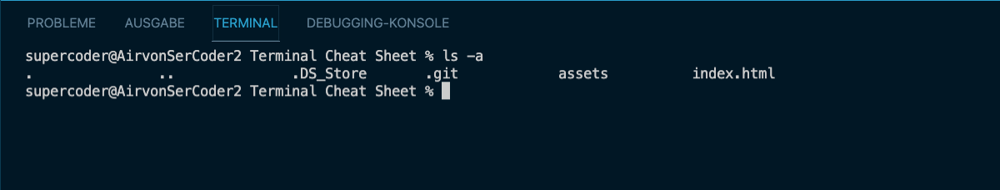Wo befinde ich mich?
Über den Befehl "pwd" kann im Terminal anzeigen lassen, in welchem Ordner ich mich genau befinde.
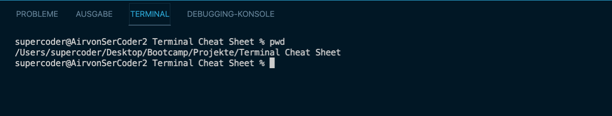Inhalte von Datein lesen
Über den Befehl "cat" kann im Terminal der Inhalt von Datei gelesen und angezeigt werden.
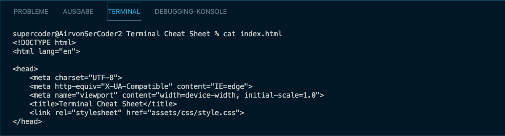BEWEGEN UND ÄNDERN
Dateien und Ordner bewegen, bzw. Namen ändern
Über den Befehl "mv Quelle Ziel (eventuell eine Änderung)" kann im Terminal einen Ordner, oder eine Datei, bewegt und dabei auch gleizeit der Namen geändert werden. Für letzteres gibt man bei der Definition des Ziels einfach einen neuen Namen für den Ordner, oder die Datei, an.
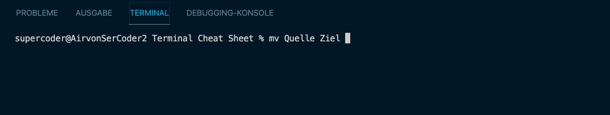Dateien und Ordner kopieren, bewegen und Namen ändern
Über den Befehl "cp Quelle Ziel (eventuell eine Änderung)" kann im Terminal einen Ordner, oder eine Datei, bewegen und kopieren und dabei gleichzeitig den Namen ändern. Man gibt hier ebenfalls beim Ziel einfach einen neuen Namen an. Bspw.: assets/img/bild1.jpeg zu assets/img/bild2.jpeg.
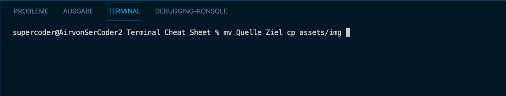LÖSCHEN
Hierbei gilt unbedingt zu beachten, dass alles was gelöscht wird unwideruflich gelöscht wird. Daher sollte man diese Befehle wirklich nur sehr vorsichtig einsetzten!!
Datei in VS Code löschen
Über den Befehl "rm" kann im Terminal eine Datei löschen.
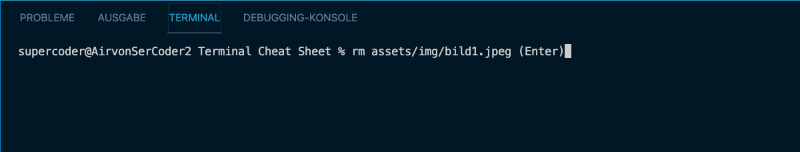Leeres Verzeichnis in VS Code löschen
Über den Befehl "rmdir" kann im Terminal ein leeres Verzeichnis löschen.
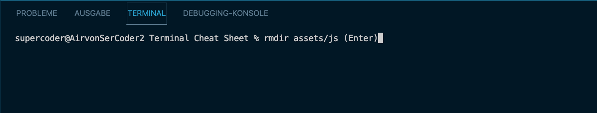